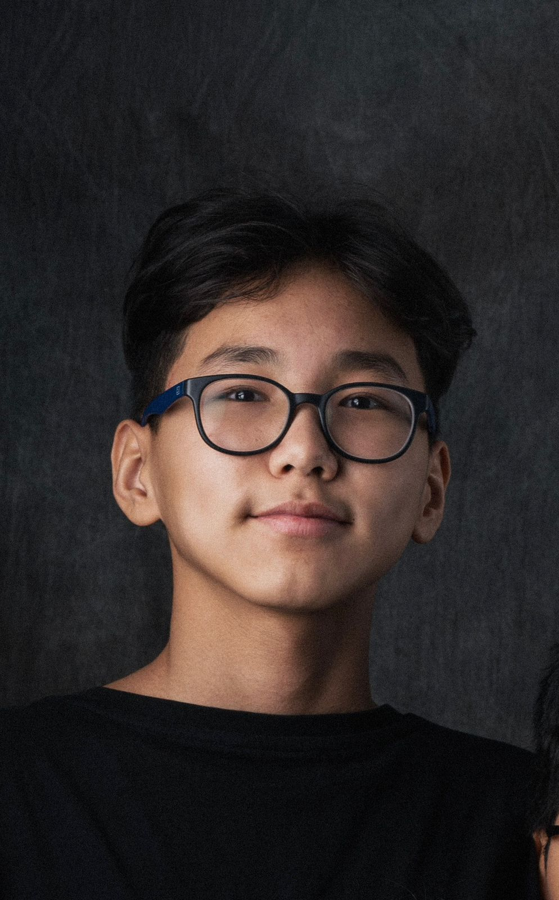
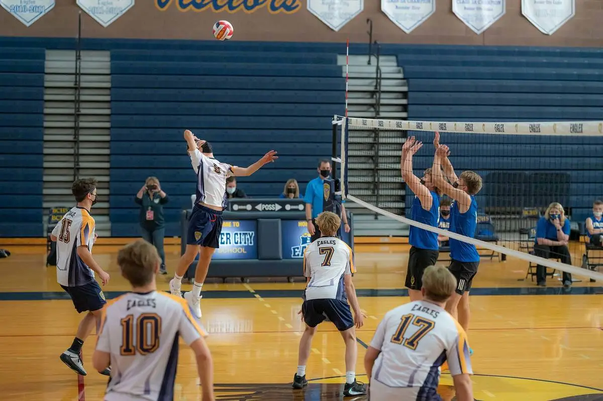

WHAT I CARE ABOUTUseful ideas,
Open to collaborationsAstana, Kazakhstan
STUDENT · AI BUILDER · DESIGNER · ENTREPRENEUR
I build things
for a better future.
Building at the intersection of AI, design and entrepreneurship.
Curious by nature. Serious about building.

01 / BUILDERBased in
Astana, KZ
Astana, KZ
Current focus
Design × AI × business
Design × AI × business
A LITTLE ABOUT ME
Curiosity is my compass. I’m a student, designer, and startup builder exploring how technology can make a real difference.
01 — THE PERSON
A student with
a builder’s mindset.
Design meets technology.
Ideas meet action.
I’m a 10th-grade student at Nazarbayev Intellectual School of Physics and Mathematics in Astana, Kazakhstan. With a GPA of 5.0 (4.0 American scale), I bring the same focus to academics that I bring to creating and leading.
I’m a certified graphic designer, AI enthusiast, startup builder, and volleyball player. My mission is to bridge design, artificial intelligence, and business to create innovative solutions that make a difference.
More of my journeyHOW I WORKLearn quickly.
Learn quickly.
Make things real.
5projects
on the board
on the board
2events
organized
organized
3global program
candidacies
candidacies
A few things I’m
learning by doing.
learning by doing.
02 — THE JOURNEY
Still learning.
Already building.
A few chapters that
shaped the way I think.
Nazarbayev Intellectual School
Physics and Mathematics direction · 10th Grade · GPA 5.0 (4.0 American)
CURRENTInternational School of Hanover Region
Exchange program in Hannover, Germany.
COMPLETED APRIL 2026Cambridge International Examinations
Mathematics A · Chemistry A* · Kazakh Language A · Russian Language A · History of Kazakhstan A
EXAM RESULTSDesign X AI Hub
Co-founded and lead an educational club focused on design and artificial intelligence.
CO-FOUNDER & LEADERHackathon Astana & Startup Battle Almaty
Organizing platforms for young entrepreneurs and developers to learn, build, and connect.
EVENT ORGANIZER✳CO-FOUNDER & LEADER
A COMMUNITY I’M BUILDING
Design X AI Hub
Created to help people learn modern design tools and AI technologies, guide members in building real startups, and foster innovation and entrepreneurship.
GLOBAL PROGRAMS & CANDIDACIES
Exploring what’s next.
Selected as a candidate for youth entrepreneurship and innovation programs.
LaunchX
Summer Flagship Entrepreneurship Program · A selective program where students launch real startups.
Inspirit AI
AI Scholars Program · Stanford- and MIT-led, with hands-on artificial intelligence projects.
The Knowledge Society (TKS)
An intensive program for ambitious teenagers to build the mindset and skills to solve major challenges.
03 — SELECTED WORK
Ideas in
motion.
A growing collection of
products and experiments.
T↗
MATCHING
IN MOTION
IN MOTION
01 / AI · SPORTS TECH↗
Trainee
AI-powered matchmaking connecting athletes with professional trainers through high-accuracy matching.
Visit website ↗SIGNALS
INTO SENSE
02 / AI · NEUROTECH↗
SynapSense
AI brain detection platform paired with a wearable device for real-time neural signal monitoring and analysis.
⌁✈A BETTER
WAY TO WANDER
WAY TO WANDER
03 / AI · TRAVEL TECH↗
TripAI
AI-powered platform for automated tour planning and booking.
JBETTER
CONNECTIONS
CONNECTIONS
04 / AI · HR TECH↗
JOBSY AI
Intelligent recruitment platform automating the employee hiring process.
NISKITAPA LIBRARY
IN REACH
IN REACH
05 / EDUCATION · WEB↗
NIS Kitap
A digital library containing textbooks and resources for school.
04 — RECOGNITION
Earned through
the work.
A few moments that
keep me moving.
✳ Progress is a practice, not a finish line.
05 — COMMUNITY & EVENTS
Make room
for others to build.
I don’t only join the room.
I help make it happen.
I organize hackathons and startup battles that create space for young entrepreneurs and developers in Kazakhstan to grow.
06 — THE TOOLKIT
Different tools.
One direction.
Built through projects,
practice, and curiosity.
OUTSIDE THE SCREEN
Volleyball keeps me grounded.
Active member of Everest Volleyball Club. Regular training, competition, and being part of a team.

Freelance work
Graphic design and AI development, including UI/UX, branding, and AI solutions.
07 — SAY HELLO
Let’s make
something useful.
Have a collaboration in mind, an interesting problem, or just want to talk? I’d like to hear from you.
HAVE A SPECIFIC IDEA?